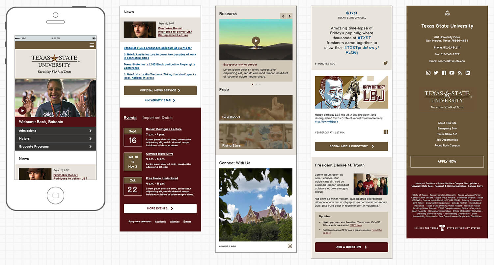
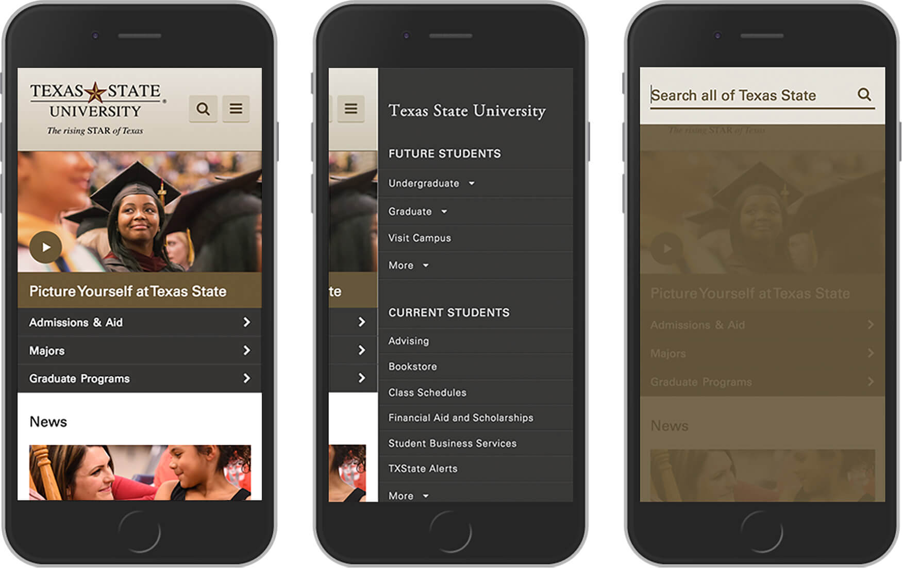
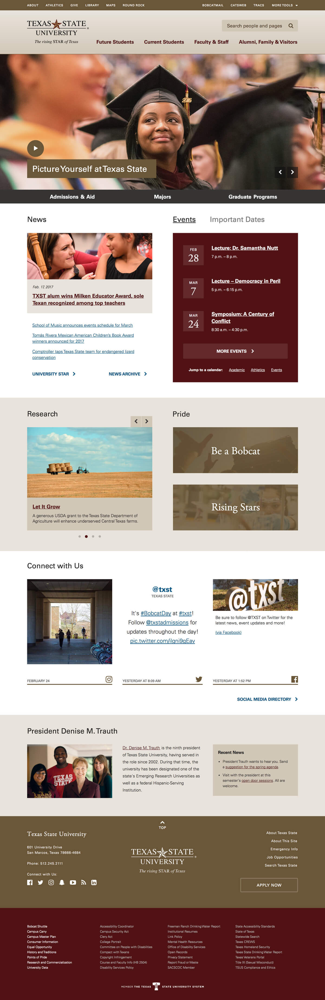

Modernizing the center
I designed and built the front end of Texas State's first responsive homepage in the fall of 2015. It's live on the web, and attracts about 1.2 million views each month.
Context
The Texas State homepage hadn't been updated since 2009. It utilized a condensed, “above the fold” approach and wasn't optimized for mobile devices. Brand elements, color, and typography were dated or not systematic, and there was a heavy reliance on image snippets to achieve design objectives. Students and younger employees would frequently say a change was overdue.

The Texas State homepage in June 2014
Goals
In early 2015, I began making the case to leadership that a new homepage was necessary to keep up with modern device patterns, user expectations, and competitor efforts. By September, an ambitious go-live date was set for the end of the year.
The new site would:
- Be responsive and accessible
- Respect existing information architecture
- Handle emergency messaging in a clear, sensible way
- Highlight social media channels
- Be the centerpiece of a new, purposeful digital brand strategy
Process
This project closely followed the development of the university’s primary template and style guide, in which most brand elements (typography, color) and content patterns (sliders, buttons) were intensively iterated upon and finalized. Much of the process involved applying these patterns to existing items, adapting content to a more-scrollable interface, and adding some key features to aid in recruitment and institutional politics.
Mockups
I decided to use Balsamiq for this project, and then proceed directly to a coded prototype. This gave me the opportunity to really push Balsamiq as a tool, and create some rather sophisticated mockups that resolved a majority of the visual design decisions. I was able to rapidly build, test, and discard sections of content, while solidifying things like color and image use without obsessing over details.


Homepage design mockups, full mobile layout
Demonstrating an enabled dropdown in Balsamiq
Prototypes
Using the mockups as a fairly strict guide, the rest of the design came to life in a high fidelity, responsive prototype built on a Pure.css grid. I made choices about animations and hover effects as I built it, and approved it with stakeholders row-by-row. Overall the build took about a month of dedicated work, with 90% of the markup and styles making it into the final product. The source code is on GitHub.
Going live
We turned on the new site at the beginning of 2016, making some key improvements to site search and performance enhancements in subsequent iterations.

Texas State homepage, mobile view
Texas State homepage in January 2017; compare with the original demo
Major improvements over previous design
- Responsive design
- AAA accessible color contrast and keyboard navigation
- Brand and style guide adherence
- Modern, scrollable interface
- Graphical news, research, and social media features
- Ability to schedule content features
Noteworthy features
Emergency alerts
We estimated that approximately 25-30% of the Texas State community (with an even larger percentage of parents) checked the university homepage to confirm details in an emergency. After comprehensively studying nearly 25 peer institutions, and researching the broader issues of designing for stress, it became clear that homepage notifications must:
- be easy to read and interact with on any device
- appear at the top of the screen and push content down
- use a unique pattern unlikely to be confused with marketing objectives
- utilize international symbology
- be accessible and color-blind-friendly
- have a timestamp indicating last update
After testing several options, a consensus was reached with creative staff, university police, the president’s cabinet, and several informal test groups, arriving at a universally trusted visual pattern. The live demo is on GitHub.

Responsive emergency alerts; clear and unmistakable
Social media
Texas State's social media outreach grew dramatically in recent years, and highlighting those efforts was a major priority. Since each social platform has very different types of content and display characteristics, the main challenge was finding a way to unify each feed with a common look and feel. Here are some of the most notable design choices:
- The lower section of each feed contains a horizontal rule, a timestamp, and a gold icon. This provides consistency and creates a useful visual boundary.
- Each social widget uses an API, so manual CMS updates are not necessary.
- The Twitter widget has a conversational feel, cycling through the most recent account tweets and favorited tweets, allowing some curated user-generated content on the homepage.
- The Facebook feed only pulls in text + image posts for layout predictability.

Social media feeds, desktop layout
Is it perfect?
Nope. But everyone was really happy with the results. Our developer did an amazing job connecting everything and templating it for easy editing. If I could change anything it would be:
- It’s too flat: The site could really use some background patterns, gradients, or overlapping elements to add depth.
- Content strategy is dated: University websites are slowly becoming more recruitment and user focused, favoring data over politics. We weren’t able to change that this time around, but we laid the groundwork for a strategic shift.
- Medium-width device layout is lazy: For simplicity everything collapses to a single column at 800px. I would’ve liked to play more with multi-column layouts from 480px to 800px, given more time or resources.